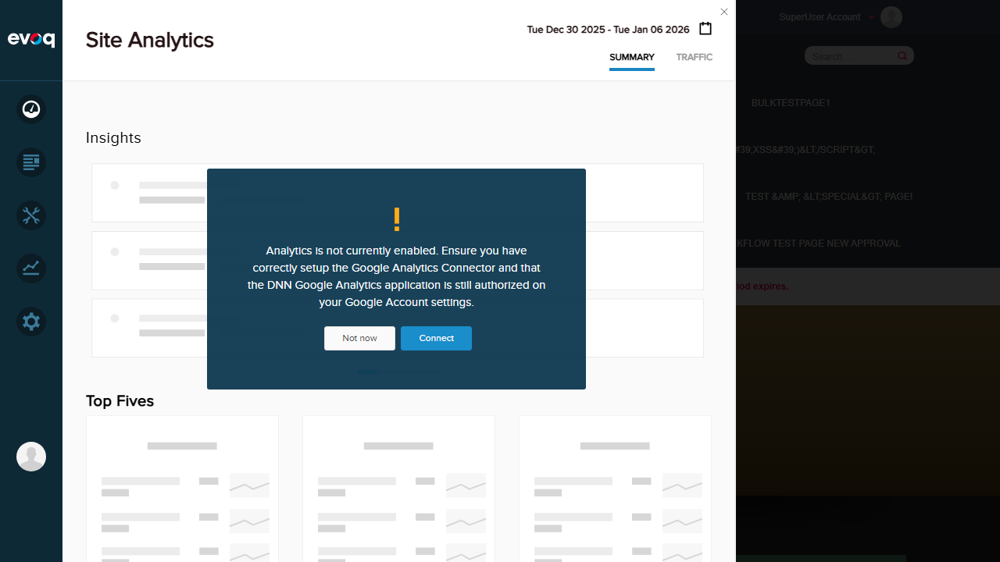

CRITICAL BUG DISCOVERED
Issue: Community Analytics fails to load due to JavaScript error
Error: TypeError: utility.serializeCustomDate is not a function
Location: social-dashboard-combined-instance.js:1025
Impact: The entire Community Analytics module (including Discussions, Blogs, Answers, Wiki, Ideas, and Social Events tabs) cannot be accessed. The panel remains blank after clicking on Community Analytics in the Dashboard menu.
TypeError: utility.serializeCustomDate is not a function
at dashboardClass.init (social-dashboard-combined-instance.js:1025:39)
at Object.init (social-dashboard-combined.js:16:23)
at extension.js:104:32
Note: Site Analytics works correctly, confirming the issue is isolated to Community Analytics.
Test Summary
| Total Tests |
Passed |
Failed |
| 6 |
0 |
6 |
Test Cases
Test 1: View Discussion Thread Metrics FAIL
Objective: View metrics for discussion threads including views, replies, and engagement data.
Steps Taken:
- Logged into DNN as SuperUser (host)
- Navigated to PersonaBar > Dashboard
- Clicked on "Community Analytics"
- Attempted to access Discussions tab
Result: Community Analytics panel failed to load. JavaScript error prevented initialization. The panel remained blank with no content displayed.
Screenshot - Dashboard Menu Expanded:

Screenshot - Blank Panel (JS Error):

Test 2: Track Reply Rates and Engagement FAIL
Objective: Track reply rates and user engagement metrics for discussions.
Steps Taken:
- Attempted to access Community Analytics from Dashboard
- Community Analytics panel failed to load
Result: Cannot test - Community Analytics fails to initialize due to JavaScript error: utility.serializeCustomDate is not a function
Test 3: Monitor Active Discussion Topics FAIL
Objective: Monitor which discussion topics are most active.
Steps Taken:
- Attempted to access Community Analytics from Dashboard
- Community Analytics panel failed to load
Result: Cannot test - Community Analytics fails to initialize due to JavaScript error: utility.serializeCustomDate is not a function
Test 4: Thread Popularity Ranking FAIL
Objective: Test the ranking of discussion threads by popularity.
Steps Taken:
- Attempted to access Community Analytics from Dashboard
- Community Analytics panel failed to load
Result: Cannot test - Community Analytics fails to initialize due to JavaScript error: utility.serializeCustomDate is not a function
Test 5: Verify Discussion-Specific Data FAIL
Objective: Verify that data displayed is specific to discussions (not mixed with other community content).
Steps Taken:
- Attempted to access Community Analytics from Dashboard
- Community Analytics panel failed to load
Result: Cannot test - Community Analytics fails to initialize due to JavaScript error: utility.serializeCustomDate is not a function
Test 6: Analyze Discussion Trends Over Time FAIL
Objective: Analyze trends in discussion activity over different time periods.
Steps Taken:
- Attempted to access Community Analytics from Dashboard
- Community Analytics panel failed to load
Result: Cannot test - Community Analytics fails to initialize due to JavaScript error: utility.serializeCustomDate is not a function
Observations
- Critical Bug: The entire Community Analytics module is non-functional due to a missing or incompatible
utility.serializeCustomDate function. This affects all sub-features including Discussions, Blogs, Answers, Wiki, Ideas, and Social Events analytics.
- Comparative Test: Site Analytics (Dashboard > Site Analytics) loads and functions correctly, proving the issue is isolated to Community Analytics and not a general PersonaBar problem.
- Code Review: The code in
Services/CommunityAnalyticsController.cs shows the API endpoints exist for:
GetModuleDashboardInfo - Module-specific dashboard with moduleName parameterGetModuleContextData - Context data for modules like DiscussionsGetModulePopularContent - Popular content for specific modulesGetModuleTagStats - Tag statistics per module
- Frontend Issue: The
.dnn manifest shows Discussions extension is configured correctly with path social-dashboard?Discussions, but the frontend JavaScript fails during initialization.
- Root Cause: The
social-dashboard-combined-instance.js script calls utility.serializeCustomDate() at line 1025, but this function appears to be undefined or not loaded from the utility module.
Recommendation: Investigate why utility.serializeCustomDate is not available. Check if:
- The utility module is loading properly
- The function was renamed or removed in a recent update
- There's a dependency conflict or load order issue
Evidence Screenshots
Login Confirmed (Setup)

Site Analytics Works (Comparison)
Site Analytics loads correctly, proving the PersonaBar framework works. The issue is specific to Community Analytics.
